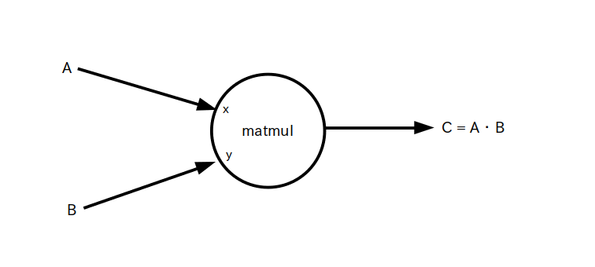

{kind=link}
import tensorflow as tf sess = tf.Session() op_const_x = tf.constant( 1 ) op_const_y = tf.constant( 2 ) op_add = tf.add( op_const_x, op_const_y ) # op_add = op_const_x + op_const_y でも可 result = sess.run( op_add ) print( result ) # 表示結果 # 3
データフローグラフ

アクティビティ: TensorFlow によるディープラーニング
学習項目: [1] TensorFlow の基本
ここでは今回のアクティビティで使用する OP ノードについて学びます。
定数 OP ノードはセットした定数テンソルをエッジに出力する OP ノードです。
書式: ノード名 = tf.constant(定数値)
入力テンソル: 無し
出力テンソル: カッコ内で指定した定数値
具体的なコード例は次の通りです。
import tensorflow as tf sess = tf.Session() #スカラー op_const = tf.constant( 1 ) result = sess.run( op_const ) print( result ) # 表示結果 # 1 # 3 次元ベクトル op_const = tf.constant( [1, 2, 3] ) result = sess.run( op_const ) print( result ) # 表示結果 # [1 2 3] # 3 x 1 行列 op_const = tf.constant( [[1], [2], [3]] ) result = sess.run( op_const ) print( result ) # 表示結果 #[[1] # [2] # [3]] # 3 x 2 行列 op_const = tf.constant([[1, 2], [3, 4], [5, 6]]) result = sess.run( op_const ) print( result ) # 表示結果 # [[1 2] # [3 4] # [5 6]]
データフローグラフは前のページで示したハローワールドのグラフとほとんど同じなので省略します。
変数 OP ノードは定数 OP ノードと同様にセットしたテンソルをエッジに出力する OP ノードです。
定数 OP ノードの場合はセッションの途中で最初にセットした値を変更できませんが、変数 OP ノードは途中で変更する事ができます。ただし run する前に初期値で値をリセットしておかないとエラーが出ます。
なお値の変更方法についてはこのページの最後にある「代入 OP ノード」の説明を参照して下さい。
書式: ノード名 = tf.Variable( x )
入力テンソル: x ・・・ 初期値
出力テンソル: 現在値
では具体的なコード例を示します。コード内で初期値のセット例と初期化方法についても説明しています。
import tensorflow as tf sess = tf.Session() # 初期値を定数(スカラー)とする例 op_var = tf.Variable( 1 ) # run する前にグラフ内の変数全てを初期化する sess.run( tf.initialize_all_variables() ) result = sess.run( op_var ) print( result ) #表示結果 # 1 # 3 x 2 行列を作って要素全てを 0 で初期化する例 op_var = tf.Variable( tf.zeros([3,2]) ) # run する前にグラフ内の変数全てを初期化する sess.run( tf.initialize_all_variables() ) result = sess.run( op_var ) print( result ) # 表示結果 # [[ 0. 0.] # [ 0. 0.] # [ 0. 0.]] # 3 x 2 行列を作って、要素全てを平均 0、標準偏差 0.1 の正規乱数で初期化する例 op_var = tf.Variable( tf.random_normal( [3, 2], mean=0.0, stddev=0.1 ) ) # run する前にグラフ内の変数全てを初期化する sess.run( tf.initialize_all_variables() ) result = sess.run( op_var ) print( result ) # 表示結果(乱数なので毎回変わる) #[[ 0.08048159 0.03259621] # [ 0.09933039 0.17510985] # [-0.0177522 -0.01852487]]
このデータフローグラフも前のページで示したハローワールドのグラフとほとんど同じなので省略します。
足し算 OP ノードは 2 つのテンソルの足し算を行うノードです。
書式: ノード名 = tf.add( x, y )
※ ノード名 = x + y と書いてもOK
入力テンソル: x と y
出力テンソル: x + y
具体的なコード例とデータフローグラフは次の通りです。入力テンソル x、y はスカラーでもベクトルでも行列でも構いませんが、テンソルの種類や行数、列数が違うとエラーになります。
import tensorflow as tf sess = tf.Session() op_const_x = tf.constant( 1 ) op_const_y = tf.constant( 2 ) op_add = tf.add( op_const_x, op_const_y ) # op_add = op_const_x + op_const_y でも可 result = sess.run( op_add ) print( result ) # 表示結果 # 3
データフローグラフ
上の例ではスカラー同士を足していましたが、ベクトルや行列の和の場合は要素毎に値が足し合わされます。
import tensorflow as tf sess = tf.Session() op_const_x = tf.constant( [1, 2] ) op_const_y = tf.constant( [3, 4] ) op_add = tf.add( op_const_x, op_const_y ) # op_add = op_const_x + op_const_y でも可 result = sess.run( op_add ) print( result ) # 表示結果 # [4 6]
データフローグラフは同じなので略
掛け算 OP ノードは 2 つのテンソルの掛け算を行うノードです。
なお行列積ではありませんのでテンソルが行列の場合は要素毎に値が掛け合わされます。行列積は次の項目で扱います。
書式: ノード名 = tf.mul( x, y )
※ ノード名 = x * y と書いてもOK
入力テンソル: x と y
出力テンソル: x * y
具体的なコード例は次の通りです。入力テンソル x、y はスカラーでもベクトルでも行列でも構いませんが、テンソルの種類が違うとエラーになります。
import tensorflow as tf sess = tf.Session() op_const_x = tf.constant( 2 ) op_const_y = tf.constant( 3 ) op_mul = tf.mul( op_const_x, op_const_y ) # op_mul = op_const_x * op_const_y でも可 result = sess.run( op_mul ) print( result ) # 表示結果 # 6
データフローグラフ

上の例ではスカラー同士を掛けていましたが、ベクトルや行列の積の場合は要素毎に値が掛け合わされます。
import tensorflow as tf sess = tf.Session() op_const_x = tf.constant( [1, 2] ) op_const_y = tf.constant( [3, 4] ) op_mul = tf.mul( op_const_x, op_const_y ) # op_mul = op_const_x * op_const_y でも可 result = sess.run( op_mul ) print( result ) # 表示結果 # [3 8]
データフローグラフは同じなので略
行列積 OP ノードは 2 つの行列の行列積を行うノードです。
書式: ノード名 = tf.matmul( x, y )
入力テンソル: x と y (どちらも行列、x の列数と y の行数が異なるとエラー)
出力テンソル: x・y
具体的なコード例は次の通りです。
import tensorflow as tf sess = tf.Session() op_const_x = tf.constant( [[1,2], [3,4], [5,6]] ) op_const_y = tf.constant( [[1],[2]] ) op_mmul = tf.matmul( op_const_x, op_const_y ) result = sess.run( op_mmul ) print( result ) # 表示結果 #[[ 5] # [11] # [17]]
データフローグラフ
log、exp、sin、cos などの関数 OP ノードはそのままその通りの演算を行いますが、ベクトルや行列の場合は各要素毎に演算が行われます。
書式: ノード名 = tf.f( x )
f(x) = log(x)、exp(x)、sin(x)、cos(x)、その他色々
入力テンソル: x
出力テンソル: f(x)
具体的なコード例は次の通りです。
import tensorflow as tf sess = tf.Session() op_const_x = tf.constant( [ 1, 2, 3], tf.float32 ) # tf.float32 は各要素を 32 bit浮動小数として扱うという意味 op_log = tf.log( op_const_x ) result = sess.run( op_log ) print( result ) # 表示結果 # [ 0. 0.69314718 1.09861231]
データフローグラフ

SoftMax OP ノードはニューラルネットワークの出力層で良く使われているノードで、出力されるテンソルの各要素の値は確率の数字を表しています。詳しくはディープラーニングの学習項目で説明します。
書式: ノード名 = tf.nn.softmax( x )
入力テンソル: x
出力テンソル: 以下のようにして求めたテンソル B を出力する。
具体的なコード例は次の通りです。
import tensorflow as tf sess = tf.Session() op_const_x = tf.constant( [ 1, 2, 3], tf.float32 ) # tf.float32 は各要素を 32 bit浮動小数として扱うという意味 op_smax = tf.nn.softmax( op_const_x ) result = sess.run( op_smax ) print( result ) # 表示結果 # [ 0.09003057 0.24472848 0.66524094] # 結果を全て足すと 1 になる → 各要素は確率の数字を表している
データフローグラフ

総和 OP ノードはテンソルの要素を全て足しあわせて出力するノードです。
書式: ノード名 = tf.reduce_sum( x )
入力テンソル: x
出力テンソル: 要素の総和
具体的なコード例は次の通りです。
import tensorflow as tf sess = tf.Session() op_const = tf.constant( [ 1, 2, 3] ) op_rs = tf.reduce_sum( op_const ) result = sess.run( op_rs ) print( result ) # 表示結果 # 6
データフローグラフ

代入(Assign) OP ノードは変数 OP ノードに保存されている値を変更するノードです。 今回のアクティビティでは使いませんが一応説明しておきます。
書式: ノード名 = tf.assign( x )
※ 変数の値が変更されるタイミングは run が完了した時
入力テンソル: x ・・・ 新しい値
出力テンソル: x がそのまま出力される
具体的なコード例とデータフローグラフは次の通りです。sess.run(tf.initialize_all_variables()) で初期化すると変数の値が元に戻っていることに注目して下さい。
import tensorflow as tf sess = tf.Session() # 初期値はスカラーの 1 op_var = tf.Variable( 1 ) # run する前にグラフ内の変数全てを初期化する sess.run(tf.initialize_all_variables()) result = sess.run( op_var ) print( result ) #表示結果 # 1 # スカラー 2 を代入 op_asn = tf.assign(op_var, 2 ) result = sess.run( op_asn ) print( result ) #表示結果 # 2 result = sess.run( op_var ) print( result ) #表示結果 : 2 に変わっている # 2 # 再びグラフ内の変数全てを初期化する sess.run(tf.initialize_all_variables()) result = sess.run( op_var ) print( result ) #表示結果 : 初期値 1 に戻る # 1
データフローグラフ